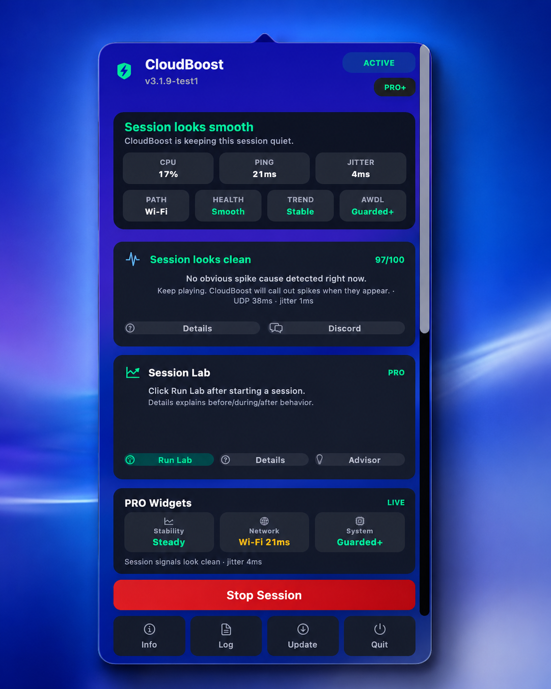

macOS gaming session cleanup
Handles AWDL, DNS refresh, sleep prevention, selected backup behavior, and process priority during a focused gaming session.
CloudBoost 4.0.1 for macOS
A native macOS gaming optimizer for GeForce NOW, Xbox Cloud Gaming, PS Remote Play, Moonlight, Steam Link, CS2, Dota 2 and native Mac games. CloudBoost helps explain the spikes a normal speed test usually misses: jitter, packet loss, AWDL/Wi-Fi noise, background traffic, Low Power Mode, thermal pressure and uneven remote play.

Version 4.0.1
CloudBoost is for cloud gaming, Xbox Cloud Gaming, GeForce NOW, PS Remote Play, Moonlight, Steam Link and native Mac sessions where random spikes matter more than average FPS.
Version 4.0.1 focuses on reliability: safer restore when the app closes, clearer diagnostics for privileged actions, stricter temporary guard files, and checksum-ready update downloads. It does not change existing Free, PRO, or PRO+ access.
What it does
Handles AWDL, DNS refresh, sleep prevention, selected backup behavior, and process priority during a focused gaming session.
Explains likely causes such as background traffic, packet loss, Low Power Mode, thermal pressure, route latency, or Wi-Fi noise, now with a faster score read.
GeForce NOW, xCloud, Boosteroid, Moonlight, PS Remote Play, VoidLink, CS2, League, Dota, Steam, Epic, Battle.net, and Local Game.
PRO
Session Lab checks idle and under-load behavior.
Stream Signal scores p95 latency, jitter, packet loss, UDP availability, load impact, thermal state, Low Power Mode, and background interference.
Session Proof exports a before/latest report with average ping, p95 ping, jitter, packet loss, trend, and main issue.
Buy PRO licenseUse every cloud, remote play, Mac launcher, and competitive profile without paying for the game list.
Auto Boost, Smart Boost, Stability Guard, Session Lab, Stream Signal, PRO Widgets, Heat Guard, Keep Alive, and Session Proof.
Kernel Watch, background throttle, AWDL Guard+, priority Discord support, early builds, and future lower-level networking work.
Support
The Discord is open to Free and PRO users for install help, license support, screenshots, bug reports, and feature requests.
For faster help, include your macOS version, Mac model, selected profile, Wi-Fi or Ethernet status, and what Session Doctor or Session Lab is showing.
Join DiscordYes. CloudBoost includes free profiles for GeForce NOW, Xbox Cloud Gaming and Boosteroid. It focuses on the local Mac session around the stream: jitter, packet loss, Wi-Fi/AWDL behavior, background traffic, DNS, power state and thermal pressure.
Yes. CloudBoost can be used with remote play tools such as PS Remote Play, Moonlight and Steam Link. It cannot improve the remote device itself, but it can help diagnose and reduce local macOS interruptions that make remote play feel unstable.
CloudBoost can help keep the macOS session quieter for native Mac games and local launchers. It does not modify games or promise large FPS gains. It is more useful when stutter is caused by local pressure, background tasks, Wi-Fi behavior, power state or thermal pressure.
CloudBoost is not a magic FPS booster. The main goal is steadier sessions: fewer local interruptions, clearer diagnosis of latency spikes, and better visibility into jitter, packet loss, background traffic and system pressure.
No. CloudBoost does not install KEXTs, hidden daemons, or permanent system patches. PRO+ uses reversible macOS/Darwin session controls and counters where available.
No. It does not inject into games, bypass anti-cheat systems, or modify game files. It works around the local macOS session.
Because CloudBoost is distributed outside the App Store, you may need to clear quarantine after installing: xattr -cr /Applications/"CloudBoost.app"